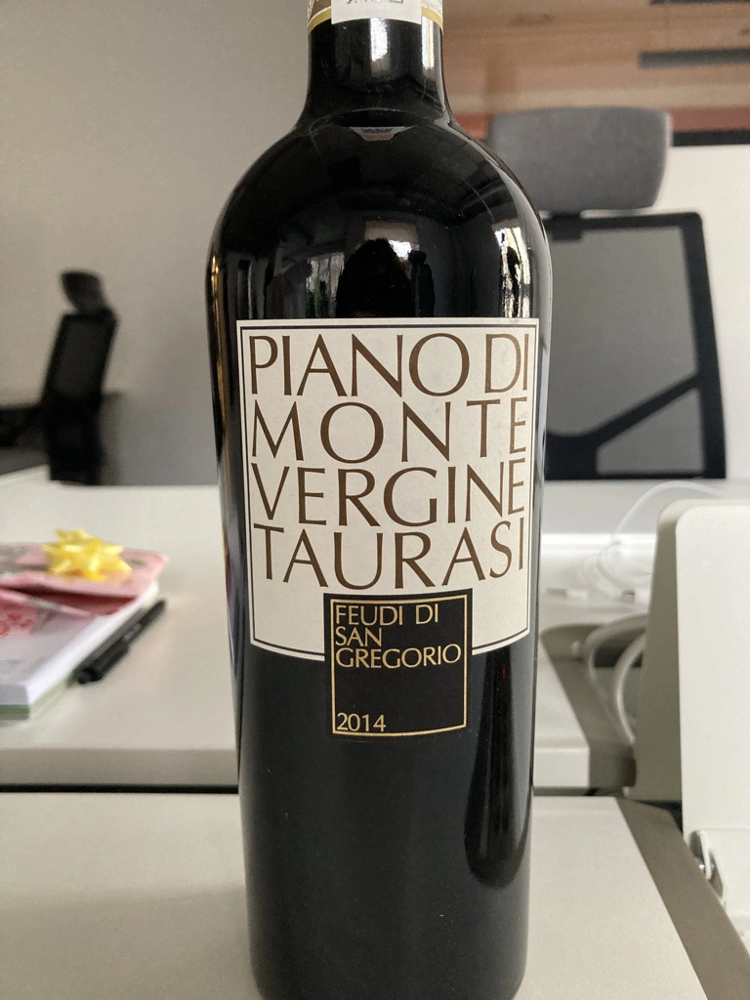

- Type
- Red Still, Dry
- Producer
- Feudi di San Gregorio
- Vintage
- 2014
- Location
- Italy, Taurasi DOCG
- Grapes
- Aglianico
- Alcohol
- 14
- Sugar
- 2.4
- Price
- 1290 UAH, 1130 UAH
- Cellar
- 1 bottle
Ratings
2021-01-26 - 7.50
Crafted Aglianico from Taurasi. Black fruits, balsamic notes, leather and tobacco. Intense, but not profound. Flavourful, well balanced, still with some potential thanks to good acidity. Quite friendly. Better pair with some meat.